Project report
Aspect-Based Sentiment Analysis for Automated Product Review Analysis Using Natural Language Processing
- Course
- Course name and code
- Team
- Member names and register numbers (Section 17)
- Supervisor
- Supervisor name
- Institution
- Department, institution
- Date
- November 2026
1Abstract and keywords
A single positive or negative label hides what a product review actually says, because most reviews praise some features of a product and criticise others. Aspect-based sentiment analysis addresses this by finding each product feature mentioned in a review and deciding the sentiment expressed towards it. This project built an end-to-end aspect-based sentiment analysis system for English product reviews. Two Bidirectional Encoder Representations from Transformers (BERT) models were fine-tuned on the SemEval-2014 Task 4 laptop and restaurant benchmark: a token classifier that tagged aspect terms and a sentence-pair classifier that judged the sentiment towards one aspect at a time, while a third BERT classifier gave the traditional single label for comparison. The models were served through a web programming interface and a browser application for single reviews, batch files, a review history and a dashboard. On the official test sets the system reached an aspect-extraction F1 of 0.846, an aspect-sentiment accuracy of 0.815 with a macro-F1 of 0.746, and an end-to-end F1 of 0.698, against 0.377, 0.663, 0.616 and 0.253 for a rule-and-lexicon baseline. The work gives sellers and analysts a feature-level summary of customer opinion that runs on an ordinary laptop without a graphics processor.
Keywords: Aspect-Based Sentiment Analysis, BERT, Aspect Term Extraction, Transformer, Product Reviews, SemEval-2014
2Introduction
Online reviews have become one of the main inputs to a purchase decision and one of the main sources of feedback for the people who sell and build products. A study by the Spiegel Research Center found that the purchase likelihood for a product with five reviews is 270% greater than for a product with none [1], and a 2025 survey of 1,026 adults in the United States found that only 4% of consumers never read online reviews of businesses [2]. A popular product collects thousands of reviews, far more than anyone can read, so sellers depend on automatic analysis to learn what customers like and dislike.
Conventional sentiment analysis answers that need poorly. It assigns one label to a whole review, but the sentence "The screen is gorgeous but the battery life is terrible" is neither positive nor negative: it is positive about the screen and negative about the battery. A seller who sees only "negative" does not know which part of the product to fix. Aspect-based sentiment analysis (ABSA) produces the missing breakdown [3], [4].
Problem statement. The input is an English review of any length up to 5,000 characters. The output is the list of aspect terms the review mentions, each with its character position, its sentiment (positive, negative or neutral) and a confidence score, plus the overall sentiment of the review. Lexicon tools such as opinion-word counting cannot tell which opinion belongs to which feature and miss aspects that are not ordinary nouns, while a sentence-level classifier ignores the aspect altogether; Section 10 measures both failures on the same test data.
Objectives. The project set four measurable objectives:
- Reach an aspect-extraction F1 above 0.80 (exact span match) on the SemEval-2014 Task 4 test sets.
- Reach an aspect-sentiment accuracy above 0.80 and a macro-F1 above 0.70 on the same test sets.
- Improve end-to-end F1 by at least 0.20 over a rule-and-lexicon baseline scored by the same code.
- Return the analysis of a typical review (under 300 characters) in less than 3 seconds on a CPU-only laptop, through a web application.
Contributions.
- A reproducible data pipeline with a leakage check that found and removed two training sentences that also occur in the official test set and 29 duplicated training sentences, so that no sentence is shared between splits.
- A two-model sentiment design (aspect-aware and sentence-level) evaluated separately on sentences whose aspects share one sentiment and on sentences that mix sentiments, together with an aspect-agnostic BERT baseline that shows where aspect awareness matters (accuracy 0.662 against 0.486 on mixed sentences).
- A complete application that runs on a CPU-only laptop: a FastAPI service and a React interface with single and batch analysis, CSV export, history, dashboard and a model-metrics view, covered by 149 backend and 114 frontend automated tests.
- A documented error analysis of 40 misclassified aspects grouped by cause and a measured cross-domain transfer study (a laptop-only extractor reached F1 0.370 on restaurant reviews against 0.872 for the model trained on both domains).
Organisation. Section 3 reviews related work. Sections 4 and 5 state the requirements and describe the dataset. Section 6 presents the method and Sections 7 and 8 the design and implementation of the system. Section 9 describes the experimental setup and Section 10 the results, including error analysis. Sections 11 to 13 cover the interface, testing and deployment. Section 14 discusses limitations and ethics and Section 15 concludes.
3Literature review
Work on ABSA since 2021 falls into four groups. This review covers thirteen papers from 2021 to 2024, grouped by approach, plus the 2019 BERT-based work they build on. Scores quoted below are on the SemEval-2014 laptop (Lap14) and restaurant (Rest14) test sets, as accuracy / macro-F1 for aspect sentiment unless stated otherwise.
Classical, lexicon and knowledge-based methods. The classical line goes back to Hu and Liu [5], who mined frequent noun phrases as product features and scored them with an opinion-word lexicon; this project's rule baseline follows that recipe. Recent surveys place such knowledge-based classifiers next to machine-learning and hybrid ones. Brauwers and Frasincar [6] build a taxonomy of aspect sentiment classifiers and show that knowledge-based methods need no training data but cannot resolve which opinion word belongs to which aspect. Nazir et al. [7] review aspect extraction and aspect sentiment from rule-based to deep methods and list implicit aspects, negation and domain dependence as open issues. Zhang et al. [4] organise the field by sub-task (single extraction or classification up to compound tuples) and identify pretrained language models as the dominant approach. No peer-reviewed 2021 to 2026 paper was found that proposes a new lexicon-only system for SemEval-2014, which itself shows that the field has moved to learnt models.
Deep learning with graph networks. Between recurrent models and pure transformers, the main line in 2021 used graph convolutional networks (GCN) over dependency trees so that an aspect can reach its opinion words through syntax. Li et al. [8] combine a syntactic GCN built from parser probabilities with a semantic GCN built from self-attention (DualGCN), reaching 78.48 / 74.74 on Lap14 and 84.27 / 78.08 on Rest14 with GloVe inputs, and 81.80 / 78.10 and 87.13 / 81.16 on top of BERT. Tian et al. [9] add dependency relation types to the graph and an ensemble over layers, reaching 81.97 / 78.71 (Lap14) and 87.41 / 82.23 (Rest14) with BERT-large. Both need the aspect to be given and an external parser at inference time.
Transformer fine-tuning and prompts. Sun et al. [10] showed that feeding BERT the aspect as a second sentence turns aspect sentiment into sentence-pair classification, and Xu et al. [11] improved BERT on reviews by post-training it on review text. Dai et al. [12] then asked whether syntax still matters: a fine-tuned RoBERTa with a simple MLP head (83.78 / 80.73 on Lap14, 87.37 / 80.96 on Rest14) matched or beat the graph models, and trees induced from the fine-tuned model were as useful as parser trees. Seoh et al. [13] reformulated aspect sentiment as a cloze prompt or as natural-language inference, which helps most when labelled data is scarce (full data: 81.10 / 76.83 on laptops, 87.50 / 80.78 on restaurants).
Generative and large-language-model methods. Yan et al. [14] cast all seven ABSA sub-tasks as generation of pointer and class indexes with BART, and Zhang et al. [15] generated the labels as text with T5 (GAS), reaching a unified extraction-and-sentiment F1 of 68.64 on Lap14 and 76.58 on Rest14. Gou et al. [16] generate sentiment tuples in several element orders and vote across them (MvP), at the cost of several decoding passes. Scaria et al. [17] instruction-tune a 200-million-parameter model with positive, negative and neutral examples in the prompt (InstructABSA), reporting 81.56 / 85.17 sentiment accuracy on Lap14 / Rest14. Two evaluations of general-purpose LLMs complete the picture: Wang et al. [18] found ChatGPT zero-shot close to fine-tuned BERT on aspect sentiment accuracy but well behind it on end-to-end extraction, and Zhang et al. [19] confirmed across 26 datasets that LLMs trail small fine-tuned models on structured tasks such as unified ABSA (zero-shot ChatGPT F1 33.14 on Lap14 against 62.35 for fine-tuned T5-large).
| Author, Year | Task | Dataset | Method | Result (Lap14 / Rest14) | Gap |
|---|---|---|---|---|---|
| Brauwers & Frasincar, 2022 [6] | Aspect sentiment (survey) | Many | Taxonomy of knowledge-based, ML and hybrid classifiers | n/a (survey) | No system built or measured (contribution 3) |
| Nazir et al., 2022 [7] | Extraction and sentiment (survey) | Many | Review of rule-based to deep ABSA | n/a (survey) | Open issues listed, not measured (contribution 4) |
| Zhang et al., 2023 [4] | All ABSA sub-tasks (survey) | Many | Taxonomy by sub-task and model type | n/a (survey) | No deployable system (contribution 3) |
| Li et al., 2021 [8] | Aspect sentiment, gold aspect | Lap14, Rest14, Twitter | Dual GCN (syntax + semantics) on BERT | Acc 81.80 / 87.13 | Needs gold aspects and a parser; no extraction (contributions 2, 3) |
| Tian et al., 2021 [9] | Aspect sentiment, gold aspect | Lap14, Rest14, Rest15/16, Twitter, MAMS | Type-aware GCN, layer ensemble, BERT-large | Acc 81.97 / 87.41 | Large model, parser at inference (contribution 3) |
| Dai et al., 2021 [12] | Aspect sentiment, gold aspect | Lap14, Rest14, Twitter, 3 non-English | Fine-tuned RoBERTa + MLP, induced trees | Acc 83.78 / 87.37 | No aspect extraction, no application (contribution 3) |
| Seoh et al., 2021 [13] | Aspect sentiment, few-shot | Lap14, Rest14 | Cloze prompts and NLI with BERT / GPT-2 | Acc 81.10 / 87.50 (full data) | Gold aspects; no mixed-sentence analysis (contribution 2) |
| Yan et al., 2021 [14] | Seven ABSA sub-tasks | 14lap, 14res, 15res, 16res | BART generates pointer and class indexes | Extraction F1 83.52 / 87.07 | GPU seq2seq; no deployment (contribution 3) |
| Zhang et al., 2021 [15] | Unified extraction + sentiment and tuples | Lap14, Rest14, Rest15/16 | T5 generates labels (GAS) | Unified F1 68.64 / 76.58 | No gold-aspect sentiment or error analysis (contribution 4) |
| Gou et al., 2023 [16] | Sentiment tuple prediction | 10 datasets incl. L14, R14 | Multi-view prompting with T5, voting | Triplet F1 63.33 / 74.05 | Several decoding passes per input; costly on CPU (contribution 3) |
| Scaria et al., 2024 [17] | Extraction, sentiment, joint | Lap14, Rest14, Rest15/16 | Instruction-tuned Tk-Instruct (200M) | Sentiment Acc 81.56 / 85.17 | Generated text must be parsed; no interface (contribution 3) |
| Wang et al., 2023 [18] | Seven sentiment tasks incl. ABSA | 17 datasets incl. Lap14, Rest14 | ChatGPT zero/few-shot vs fine-tuned BERT | ChatGPT Acc 76.42 / 83.85 | Paid API, unstable output, weak extraction (contribution 3) |
| Zhang et al., 2024 [19] | 13 sentiment tasks incl. ABSA | 26 datasets (sub-sampled) | LLM prompting vs fine-tuned T5 | ChatGPT Acc 76.80 / 82.80 | LLMs trail small fine-tuned models on extraction (contributions 1, 3) |
Gap. The strongest results come from models that assume the aspect is already given, use a parser or a large model, or generate text that has to be parsed back. Few papers report how often predictions are right in sentences that mix sentiments, where aspect awareness matters most, and almost none deliver a working application. This project addresses that gap with a two-stage BERT-base system that extracts aspects itself, is evaluated on mixed and uniform sentences against an aspect-agnostic baseline, documents its errors, and runs as a complete web application on a CPU-only laptop.
4System requirements
| ID | Requirement | Type |
|---|---|---|
| R1 | The system accepts an English review of 1 to 5,000 characters and returns every aspect term it mentions with character offsets, sentiment (positive, negative, neutral) and confidence. | Functional |
| R2 | The system returns the overall sentiment of the review next to the aspect results, so that both views can be compared. | Functional |
| R3 | The system analyses a batch of up to 50 reviews per request, pasted or uploaded as a CSV or text file, and exports the results as CSV. | Functional |
| R4 | Every analysis can be stored; the user can list, filter, open and delete stored analyses. | Functional |
| R5 | A dashboard shows aggregate sentiment distributions, the most frequent aspects and the models' test-set metrics. | Functional |
| R6 | Empty, blank or over-long input is rejected with a clear message and no server error. | Functional |
| R7 | Aspects are learnt from annotated data; there is no hard-coded aspect list and no external sentiment service. | Non-functional (design) |
| R8 | Response time under 3 seconds for a typical review (under 300 characters) on a CPU-only laptop once the models are loaded. | Non-functional (performance) |
| R9 | The service starts without the trained models and reports a degraded state instead of failing, so history and statistics stay available. | Non-functional (reliability) |
| R10 | Training and evaluation are reproducible from scripts with a fixed random seed (42); reported numbers are regenerated from the evaluation outputs. | Non-functional (reproducibility) |
| R11 | The interface works with keyboard only and on a 390-pixel-wide phone screen without sideways scrolling. | Non-functional (usability) |
5Dataset description
Name and source. SemEval-2014 Task 4: Aspect Based Sentiment Analysis [3], task page alt.qcri.org/semeval2014/task4. The preparation script downloads the four original XML files (laptop and restaurant training data, laptop and restaurant gold test data) from a public mirror of the official release. Language: English. Licence: the organisers distribute the data for research use; this project uses it for academic research only, cites the task paper, and does not commit the files to its repository (they are downloaded by script).
Content. Individual review sentences, each annotated by people with its aspect terms, their character offsets and their polarity (positive, negative, neutral or conflict). Sentences without any aspect term are included, which teaches the extractor when to find nothing.
Split. The official training data was split 90/10 per domain into training and validation sets with a fixed seed (42); the official gold test set is used unchanged. The script validates offsets and labels and removes training sentences that are duplicates (29) or that also occur in the test set (2). Aspects labelled conflict (126 training terms) are kept for extraction and excluded from sentiment classification, the usual three-class setting.
| Split | Domain | Sentences | With aspects | Aspect terms | Avg. tokens |
|---|---|---|---|---|---|
| Train | Laptops | 2,723 | 1,330 | 2,131 | 17.1 |
| Train | Restaurants | 2,726 | 1,820 | 3,322 | 16.0 |
| Validation | Laptops | 303 | 148 | 210 | 18.0 |
| Validation | Restaurants | 303 | 198 | 367 | 16.0 |
| Test (official) | Laptops | 800 | 422 | 654 | 15.2 |
| Test (official) | Restaurants | 800 | 606 | 1,134 | 16.3 |
| Total | 7,655 | 4,524 | 7,818 | ||
| Split | Positive | Negative | Neutral | Conflict (excluded) |
|---|---|---|---|---|
| Train (both domains) | 2,831 (51.9%) | 1,507 (27.6%) | 989 (18.1%) | 126 (2.3%) |
| Validation | 310 (53.7%) | 155 (26.9%) | 102 (17.7%) | 10 (1.7%) |
| Test, laptops | 341 (52.1%) | 128 (19.6%) | 169 (25.8%) | 16 (2.4%) |
| Test, restaurants | 728 (64.2%) | 196 (17.3%) | 196 (17.3%) | 14 (1.2%) |
| Test, both | 1,069 (59.8%) | 324 (18.1%) | 365 (20.4%) | 30 (1.7%) |
Positive is the largest class in every split, which is why macro-F1 is reported next to accuracy throughout. Sample records from the prepared training data:
| ID | Sentence | Aspect terms and polarity |
|---|---|---|
| laptops:444 | Keyboard is great but primary and secondary control buttons could be more durable. | Keyboard: positive; control buttons: negative |
| restaurants:1077 | A cheap eat for NYC, but not for dosa. | eat: positive; dosa: negative |
| restaurants:2783 | This is a consistently great place to dine for lunch or dinner. | dine: positive; lunch: neutral; dinner: neutral |
| laptops:2289 | It's the inside that is truly wonderful. | none (no explicit aspect term) |
Each prepared sentence also carries word tokens and BIO tags, for example "Most everything is fine with this machine: speed, capacity, build." is tagged O O O O O O O O B-ASPECT O B-ASPECT O B-ASPECT O. No new data was annotated in this project, so no inter-annotator agreement is reported.
6Proposed methodology
6.1 Architecture
The method is a two-stage pipeline. Stage 1 finds aspect terms by labelling every word; stage 2 classifies the sentiment of each found aspect given the whole sentence. A third model classifies the sentence without an aspect and stands for traditional sentiment analysis. Fig. 1 shows the blocks; the same preprocessing code and model wrappers are used in training, evaluation and the running application, so the reported metrics describe the deployed code path.
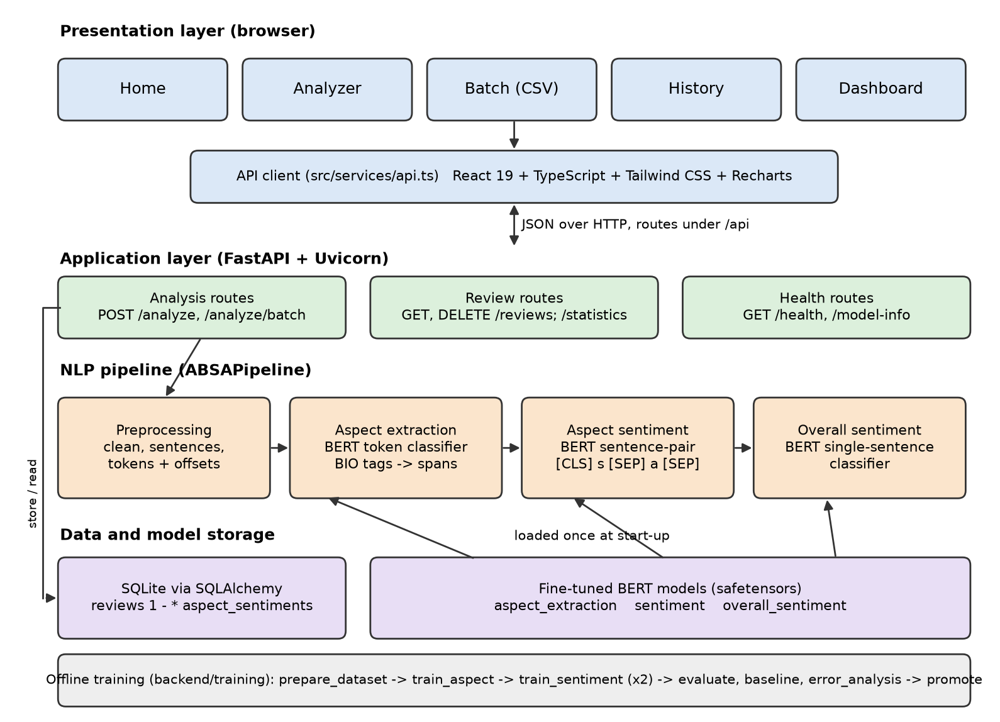
6.2 Text preprocessing
Preprocessing runs in a fixed order. Cleaning applies Unicode NFKC normalisation, removes HTML tags, HTML entities and control characters, and collapses whitespace without changing the words. The review is then split into sentences with the NLTK Punkt model, because the models were trained on single sentences. Each sentence is tokenised into words and single punctuation marks, and every token keeps its character offsets so that predictions can be mapped back to the original text for highlighting. Lowercasing is left to the uncased BERT tokenizer, which then splits words into WordPiece subwords ("touchpad" becomes "touch" and "##pad").
Stop words are deliberately kept and nothing is stemmed: a contextual model needs words such as "not" and "but", and removing them turns "not good" into "good". WordNet lemmatisation is used only to group aspects in the statistics, so that "batteries" and "battery" are counted together. The reviews are English only; no script conversion or transliteration is applied, and Section 12 records how code-mixed and non-English input behaves.
For training, the annotated character spans become one BIO tag per word (B-ASPECT begins an aspect, I-ASPECT continues it, O is everything else). Because BERT may split one word into several pieces, the first piece of each word carries the word's label and the remaining pieces and special tokens get the ignore index −100, so the loss is computed once per word.
words : The battery life is great but the screen is dim . tags : O B-ASPECT I-ASPECT O O O O B-ASPECT O O O pieces : [CLS] the touch ##pad is great [SEP] labels : -100 O B-ASPECT -100 O O -100
6.3 Text representation
All three models use contextual embeddings from the pretrained bert-base-uncased encoder [20]: 12 Transformer layers, hidden size 768, 12 attention heads and about 110 million parameters, with a 30,522-token WordPiece vocabulary. The encoder is fine-tuned end to end. A Transformer encoder was chosen over static embeddings (word2vec, GloVe, fastText) because the polarity of an aspect depends on its context and on words far from it in the sentence.
6.4 Models
Aspect extraction (token classification). For a sentence of word-pieces x1…xn, BERT produces hidden states hi; a linear layer maps each to the three BIO classes. The training loss is cross-entropy over the first piece of every word (the set W):
p(yi | x) = softmax(Wt hi + bt), LATE = −(1/|W|) Σi∈W log p(yi* | x) (1)
Consecutive B/I tags are merged into one multi-word aspect, so "battery life" is found as one unit, and its confidence is the mean confidence of its words.
Aspect sentiment (sentence-pair classification). The input is the pair [CLS] sentence [SEP] aspect [SEP], the auxiliary-sentence formulation that adapts BERT to aspect sentiment [10]. Self-attention lets the aspect in the second segment attend to the opinion words about it, so one sentence can receive different labels for different aspects. A linear layer on the [CLS] state hCLS gives the three polarities c ∈ {negative, neutral, positive}:
p(c | s, a) = softmax(Ws hCLS(s, a) + bs), ĉ = argmaxc p(c | s, a), confidence = maxc p(c | s, a) (2)
Overall sentiment (single-sentence classification). The same head on [CLS] sentence [SEP]. SemEval-2014 has no sentence-level labels, so the training label is derived from the aspect polarities (positive when positive aspects outnumber negative ones, negative in the opposite case, neutral on a tie); sentences without aspects are not used. For a review of S sentences the class probabilities are averaged:
p(c | review) = (1/S) Σk=1..S p(c | sk) (3)
An earlier version trained one classifier on both kinds of input. Training a model to label whole sentences rewards it for ignoring the aspect it is asked about, so the two jobs were given separate models. No large language model is used: all three models are fine-tuned (full fine-tuning, no LoRA, no prompting).
6.5 Training details
Training uses a plain PyTorch loop with the AdamW optimiser [21] (weight decay 0.01, none on biases and LayerNorm weights), a learning rate that rises linearly over the first 10% of steps and then decays linearly to zero, gradient clipping at norm 1.0, dynamic padding and length-bucketed batches. After every epoch the model is scored on the validation split (span F1 for extraction, macro-F1 for sentiment) and only the best checkpoint is kept; the test set plays no part in training. The learning-rate factor at step t of T with Tw warm-up steps is:
η(t) = η0 · t / Tw for t < Tw, η(t) = η0 · (T − t) / (T − Tw) otherwise (4)
| Setting | Aspect extraction | Aspect sentiment | Overall sentiment |
|---|---|---|---|
| Pretrained encoder | bert-base-uncased | ||
| Training data | 5,449 sentences | 5,327 (sentence, aspect) pairs | 3,088 sentences |
| Learning rate | 3e-5 | 2e-5 | 2e-5 |
| Batch size | 16 | 16 | 16 |
| Epochs (best kept) | 3 (3) | 4 (3) | 4 (4) |
| Max sequence length | 128 | 128 | 128 |
| Optimiser | AdamW, weight decay 0.01, warm-up 10% then linear decay, gradient clipping 1.0 | ||
| Dropout | 0.1 (BERT hidden and attention dropout) | ||
| Selection metric | validation span F1 | validation macro-F1 | validation macro-F1 |
| Random seed | 42 | 42 | 42 |
| Training time (CPU) | 78.6 min | 95.0 min | 37.3 min |
7System design
The application has three layers (Fig. 1): a React single-page interface, a FastAPI service with the NLP pipeline, and storage for the review history (SQLite through SQLAlchemy) and the model files. The models are loaded once at start-up, so a request pays only for inference; routes are plain synchronous functions, which FastAPI runs in a thread pool so that CPU-bound inference does not block the server. Fig. 2 traces the data through one analysis, Fig. 3 shows who uses which function, and Fig. 4 shows the order of calls for one request.
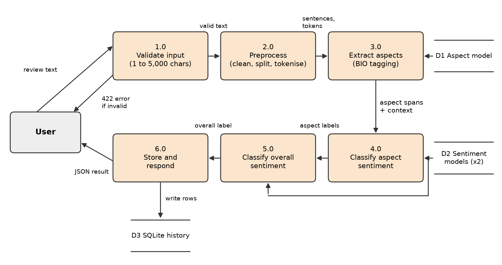
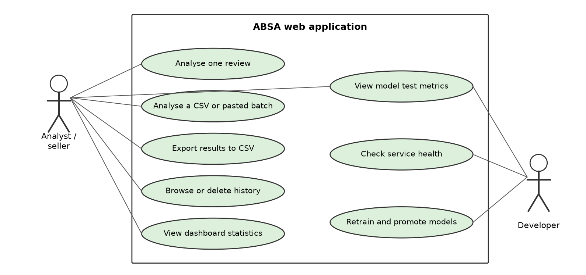
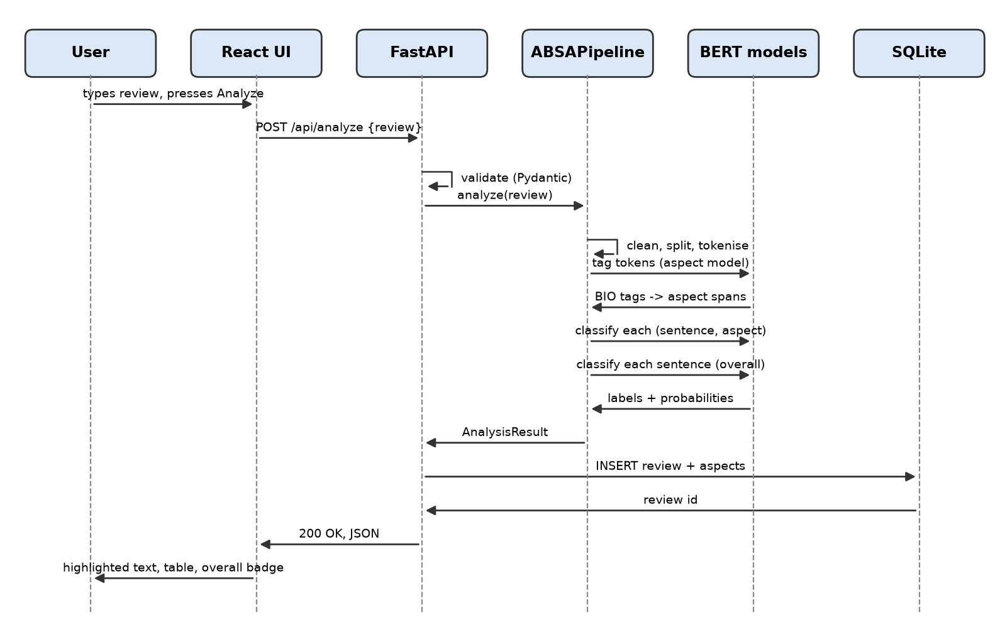
| Module | Function | Input / Output |
|---|---|---|
Data preparation (training/prepare_dataset.py) | Download, validate, de-duplicate and split SemEval-2014; leakage check | 4 XML files / train, val, test JSONL and CSV, statistics JSON |
Preprocessing (app/nlp/preprocessing.py) | Clean text, split sentences, tokenise with offsets, BIO conversion, context clause | Raw review / sentences and tokens with character offsets |
Aspect extraction (app/nlp/aspect_extraction.py, app/models/aspect_model.py) | BERT token classifier; merge BIO tags into spans | Tokens / aspect terms with offsets, confidence and context |
Sentiment (app/nlp/sentiment.py, app/models/sentiment_model.py) | Aspect-pair and sentence-level BERT classifiers | (sentence, aspect) pairs, sentences / label and probability |
Pipeline (app/nlp/pipeline.py) | Runs the stages in order for one review | Review text / AnalysisResult |
REST API (app/api/routes) | Analyse, batch, history, statistics, health, model information | JSON request / JSON response, HTTP 200, 204, 404, 422, 503 |
Database (app/database) | Store reviews and aspect results, aggregate statistics | AnalysisResult / rows in reviews and aspect_sentiments |
Training and evaluation (training/*) | Fine-tune, evaluate, baseline, error analysis, promote better models | Prepared data / model folders, training logs, reports and figures |
Frontend (frontend/src) | Home, Analyzer, Batch, History and Dashboard pages; CSV parsing and export | User input, CSV files / highlighted results, tables, charts, CSV download |
8Implementation
The backend is written in Python and the frontend in TypeScript. TABLE VIII lists the libraries with the versions installed on the development machine; the full code is in the repository.
| Area | Library (version) | Used for |
|---|---|---|
| Language runtime | Python 3.13.6; Node.js 24.14.1 | Backend and training; frontend build |
| Deep learning | PyTorch 2.14.1 (CPU build); Hugging Face Transformers 5.18.0 [22] | BERT models, tokenizers, training loop |
| Classical NLP and ML | NLTK 3.10.3; scikit-learn 1.9.1; pandas 3.0.6; NumPy 2.5.3 | Sentence splitting, POS tagging and lemmas (baseline, statistics); metrics; data handling |
| Web service | FastAPI 0.142.2; Uvicorn 0.54.0; Pydantic 2.13.5; SQLAlchemy 2.1.3 with SQLite | REST API, request validation, review history |
| Frontend | React 19.3.0; TypeScript 7.0.2; Vite 8.3.2; Tailwind CSS 4.3; Recharts 3.10.1; React Router 7 | Pages, charts, build |
| Testing and reporting | pytest; Vitest 5; Testing Library; Matplotlib 3.11.2; python-docx, python-pptx | Automated tests; figures; submission files |
Data and preprocessing modules. prepare_dataset.py parses the XML with the standard library, checks that every offset lies inside its sentence, drops duplicate annotations and duplicate sentences, removes training sentences found in the test set, and fails if any sentence text is shared between splits. Word-label alignment is done by the tokenizer's word_ids, which maps every word-piece back to its word:
Listing 1. Encoding a pre-tokenised sentence for the aspect extractor (app/models/aspect_model.py)
def encode_words(tokenizer, words: list[str], max_length: int) -> Feature:
encoding = tokenizer(words, is_split_into_words=True,
truncation=True, max_length=max_length)
feature = {
"input_ids": encoding["input_ids"],
"attention_mask": encoding["attention_mask"],
"word_ids": encoding.word_ids(), # piece -> word index, None for [CLS]/[SEP]
}
if "token_type_ids" in encoding:
feature["token_type_ids"] = encoding["token_type_ids"]
return feature
Sentiment module. The same encoder function builds both classifier inputs. Truncation shortens only the sentence, never the aspect:
Listing 2. Building the sentence-pair input (app/models/sentiment_model.py)
def encode_pair(tokenizer, text: str, aspect: str | None, max_length: int) -> Feature:
if aspect is None: # overall sentiment: [CLS] text [SEP]
encoding = tokenizer(text, truncation=True, max_length=max_length)
else: # aspect sentiment: [CLS] sentence [SEP] aspect [SEP]
encoding = tokenizer(text, aspect, truncation="only_first",
max_length=max_length)
feature = {"input_ids": encoding["input_ids"],
"attention_mask": encoding["attention_mask"]}
if "token_type_ids" in encoding:
feature["token_type_ids"] = encoding["token_type_ids"]
return feature
Pipeline module. ABSAPipeline.analyze chains the stages; the API route validates the request with Pydantic, calls it, stores the result and returns JSON.
Listing 3. The end-to-end analysis (app/nlp/pipeline.py, shortened)
def analyze(self, review: str) -> AnalysisResult:
text = clean_text(review)
sentences = split_sentences(text)
aspects = extract_aspects(self.extractor, text, sentences) # stage 1
sentiments = classify_aspects(self.classifier, aspects) # stage 2
overall = classify_overall(self.overall_classifier, sentences)
return AnalysisResult(
review=text,
overall_sentiment=overall.label, overall_confidence=overall.confidence,
aspects=[AspectSentimentResult(aspect=a.text, sentiment=s.label,
confidence=s.confidence, context=a.context,
start=a.start, end=a.end, extraction_confidence=a.confidence)
for a, s in zip(aspects, sentiments)])
Training module. training/common.py holds the shared fine-tuning loop (Section 6.5) and writes a training_log.json with the hyperparameters, per-epoch loss and validation scores and the training time next to every model. run_all.py trains the three models into a candidates folder, can be interrupted and resumed, and keeps the laptop awake during the multi-hour CPU run; promote.py installs a candidate only if it is not worse than the installed model.
API and database modules. Eight endpoints are exposed under /api: analyse one review, analyse a batch, list, read and delete stored reviews, statistics, health and model information. Two tables, reviews and aspect_sentiments, are linked one-to-many with cascade delete; each aspect row stores a lemmatised form for grouping and the character offsets for highlighting.
Frontend module. A single typed API client is the only code that talks HTTP. The Analyzer page highlights aspects in the text and lists them with sentiment and confidence next to the overall label. The Batch page parses pasted text or CSV in the browser, sends it in chunks of up to 50 reviews with progress and cancel, and exports results with spreadsheet-formula characters neutralised. History pages through stored analyses; the Dashboard draws Recharts charts and the models' test metrics served by /api/model-info.
9Experimental setup
Hardware. All training and evaluation ran on one laptop with an 11th-generation Intel Core i5-1135G7 processor (4 cores, 2.4 GHz), 7.7 GB of RAM and no graphics processor, under Windows 11 Pro. The three models took 211 minutes of training in total.
Software. Python 3.13.6, PyTorch 2.14.1 (CPU build), Hugging Face Transformers 5.18.0, scikit-learn 1.9.1 and NLTK 3.10.3 (TABLE VIII).
Baselines. Three comparison systems were scored on the same test sentences by the same metric functions:
- B1, rule and lexicon (classical). Aspects are runs of nouns found by the NLTK part-of-speech tagger; sentiment is the count of opinion words from the Hu and Liu lexicon [5] in the aspect's clause, with a negation rule.
- B2, aspect-agnostic BERT (pretrained transformer). The fine-tuned sentence-level BERT classifier labels the sentence, and every aspect in it receives that label. It measures what the aspect input adds.
- B3, single-domain BERT extractor (pretrained transformer). The same aspect extractor trained on laptop reviews only, used to measure transfer to an unseen domain (restaurants).
Published results of other ABSA models on the same benchmark are compared in Section 10.6.
Metrics. Aspect extraction uses precision, recall and F1 with exact span matching (both boundaries must equal the annotation), micro-averaged over aspects. Aspect sentiment is scored with gold aspects given, by accuracy, macro-F1, per-class precision, recall and F1, and a confusion matrix. End-to-end ABSA starts from raw text and counts an (aspect, sentiment) pair as correct only if span and sentiment are both right. With TP, FP and FN the true positives, false positives and false negatives:
P = TP / (TP + FP), R = TP / (TP + FN), F1 = 2PR / (P + R), macro-F1 = (1/3) Σc F1c (5)
Random seed. 42 for data splitting, weight initialisation of the classification heads and batch order. Every number comes from one training run.
10Results and discussion
10.1 Comparison with the baselines
| Metric | B1 rule + lexicon | B2 aspect-agnostic BERT | Proposed (BERT, two-stage) |
|---|---|---|---|
| Aspect extraction precision | 0.2736 | n/a | 0.8255 |
| Aspect extraction recall | 0.6035 | n/a | 0.8680 |
| Aspect extraction F1 | 0.3765 | n/a | 0.8462 |
| Aspect sentiment accuracy | 0.6633 | 0.7804 | 0.8151 |
| Aspect sentiment macro-F1 | 0.6159 | 0.6814 | 0.7456 |
| Aspect sentiment accuracy, mixed sentences (331 aspects) | n/a | 0.4864 | 0.6616 |
| Overall sentiment accuracy / macro-F1 | 0.7201 / 0.6475 | 0.8160 / 0.7202 (sentence-level BERT) | |
| End-to-end F1 | 0.2530 | n/a | 0.6977 |
| Metric | Laptops | Restaurants | Both |
|---|---|---|---|
| Aspect extraction P / R / F1 | 0.787 / 0.818 / 0.802 | 0.848 / 0.897 / 0.872 | 0.826 / 0.868 / 0.846 |
| Aspect sentiment accuracy / macro-F1 | 0.774 / 0.732 | 0.838 / 0.753 | 0.815 / 0.746 |
| B2 aspect-agnostic accuracy / macro-F1 | 0.767 / 0.712 | 0.788 / 0.653 | 0.780 / 0.681 |
| Overall sentiment accuracy / macro-F1 | 0.796 / 0.731 | 0.830 / 0.707 | 0.816 / 0.720 |
| End-to-end F1 (B1 baseline) | 0.631 (0.159) | 0.736 (0.322) | 0.698 (0.253) |
All four objectives were met: extraction F1 0.846 (target 0.80), sentiment accuracy 0.815 and macro-F1 0.746 (targets 0.80 and 0.70), and an end-to-end gain of +0.445 over B1 (target +0.20). The rule baseline recovers 60% of the gold aspects but most of the nouns it proposes are not aspects (precision 0.27), so its end-to-end F1 stays at 0.25. B2 looks competitive on accuracy (0.780) because 81% of test aspects sit in sentences whose aspects all share one polarity; on the 331 aspects in mixed sentences it drops to 0.486, while the aspect-aware model reaches 0.662. That gap is the reason for the aspect-aware design. Laptops are harder than restaurants for every component: laptop aspects are more often multi-word technical terms ("ms office 2011 for mac") and the laptop test set has more neutral aspects.
10.2 Training and validation curves
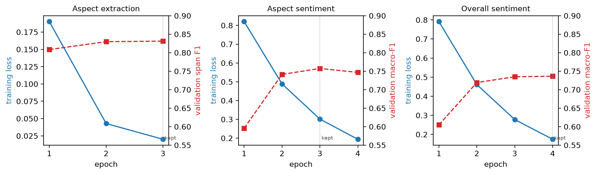
The loop logged training loss and a validation score per epoch; validation loss was not recorded, so the validation curve shows the selection metric instead. Training loss falls steadily for all three models. Validation macro-F1 of the aspect-sentiment model peaks at epoch 3 (0.757) and falls at epoch 4 (0.747) while training loss keeps falling, the first sign of over-fitting, and checkpoint selection kept epoch 3. The extractor and the overall model were still improving slightly at their last epoch.
10.3 Per-class results and confusion matrix
| Class | Precision | Recall | F1 | Test aspects |
|---|---|---|---|---|
| Negative | 0.6651 | 0.8580 | 0.7493 | 324 |
| Neutral | 0.6973 | 0.4986 | 0.5815 | 365 |
| Positive | 0.9018 | 0.9102 | 0.9060 | 1,069 |
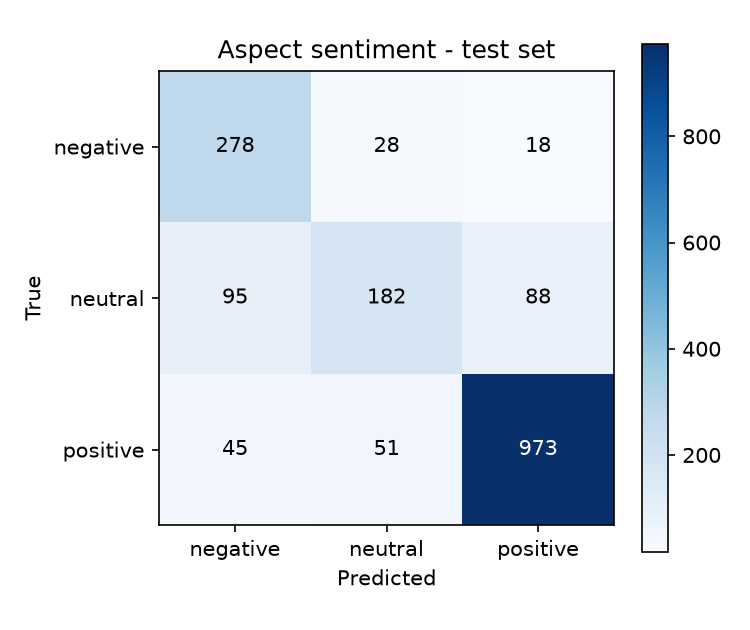
Neutral is the weakest class: half of the neutral aspects are labelled positive or negative. Negative has high recall but lower precision because many of those neutral aspects are pulled into it. Accuracy rises with the reported confidence (laptops: 43% below 0.60, 84% at 0.80 and above; restaurants: 50% and 92%), so confidence is informative even though it is not calibrated.
10.4 Transfer to an unseen domain
| Metric | B3, trained on laptops only | Deployed, both domains |
|---|---|---|
| Precision | 0.8923 | 0.8475 |
| Recall | 0.2337 | 0.8968 |
| F1 | 0.3704 | 0.8715 |
A laptop-only extractor is precise on restaurant text but finds fewer than a quarter of the aspects: it has never seen that "sushi" or "waiter" can be an aspect. On the laptop test set both models score alike (F1 0.790 against 0.802). Aspect vocabulary is domain-specific, so a new product category needs annotated examples from that category.
10.5 Error analysis
Of 1,758 test aspects, 325 are misclassified (144 of 638 laptop aspects, 181 of 1,120 restaurant aspects). A random sample of 40 misclassified aspects (20 per domain, fixed seed) was read and grouped by cause (TABLE XIII). Most errors come from neutral aspects that share a sentence with opinion words meant for something else, and from negation or absence.
| Cause | Errors | Typical pattern |
|---|---|---|
| Opinion of a neighbouring phrase leaks onto a neutral aspect | 14 | Neutral mentions in descriptive or complaining sentences receive the sentence's tone |
| Implicit sentiment (facts, quantities, no opinion word) | 8 | "12.44 seconds to boot."; "only one waiter for the whole restaurant" |
| Negation and absence | 7 | "has no hard drive"; "the fans aren't audible"; "NEVER HAD A BAD MEAL" |
| Sarcasm, rhetorical questions and idioms | 5 | "How can hope to stay in business with service like this?"; "bending over backwards" |
| Contrast and wishes in long multi-clause sentences | 4 | "So happy with this purchase, I just wish it came with Microsoft Word." |
| Graded or hedged sentiment | 2 | "sushi was good, just not fantastic"; "the food is mediocre for the prices" |
| Sentence | Aspect | Gold | Predicted (confidence) | Cause |
|---|---|---|---|---|
| The Mac mini is about 8x smaller than my old computer which is a huge bonus and runs very quiet, actually the fans aren't audible unlike my old pc | fans | positive | negative (88%) | Negation |
| How can hope to stay in business with service like this? | service | negative | positive (47%) | Rhetorical question |
| I needed a laptop with big storage, a nice screen and fast so I can photoshop without any problem. | screen | neutral | positive (99%) | Opinion leak (a wish, not an evaluation) |
| I know some people complained about HDMI issues but they released a firmware patch to address that issue. | HDMI | neutral | negative (85%) | Opinion leak |
| Average cake thats been courted by a LOT of hype. | cake | negative | positive (76%) | Sarcasm |
Extraction errors follow a different pattern: one-word aspects are found exactly 89.5% (laptops) and 94.8% (restaurants) of the time, multi-word aspects only 72.3% and 76.7%, usually because a boundary is one word off ("graphic design" found as "design"). Spelling variation is handled better than expected: in Section 12, "batery life" and "scren" were still extracted and labelled. A recurring failure outside the test set is the word "spotless", which the classifier read as negative in two hotel reviews; it is rare in laptop and restaurant reviews.
Leakage check. The scores are well below 100%, but the split was still checked: the preparation script removed the two training sentences that also occur in the test set and fails if any sentence text is shared between splits. One caveat remains. The deployed models replaced earlier ones after a comparison of test scores, a mild use of the test set for model selection, so the reported numbers may be slightly optimistic.
10.6 Comparison with published work
| System | Encoder | Lap14 Acc / MF1 | Rest14 Acc / MF1 |
|---|---|---|---|
| Vanilla BERT, Xu et al. [11] | BERT-base | 75.29 / 71.91 | 81.54 / 71.94 |
| Fine-tuned BERT, reported by Wang et al. [18] | BERT-base | 77.85 / 73.20 | 83.94 / 75.28 |
| BERT sentence-pair baseline, reported by Tian et al. [9] | BERT-base | 78.68 / 74.64 | 84.55 / 77.34 |
| This project (deployed) | BERT-base | 77.43 / 73.22 | 83.84 / 75.28 |
| ChatGPT zero-shot, Wang et al. [18] | LLM, prompted | 76.42 / 66.79 | 83.85 / 70.57 |
| DualGCN + BERT, Li et al. [8] | BERT-base + GCN | 81.80 / 78.10 | 87.13 / 81.16 |
| RoBERTa-MLP, Dai et al. [12] | RoBERTa-base | 83.78 / 80.73 | 87.37 / 80.96 |
The project's sentiment classifier lands where a plain BERT-base sentence-pair model is expected to land: within about one point of the BERT-base baselines reported by Wang et al. and Tian et al., and above the vanilla BERT of Xu et al. It beats zero-shot ChatGPT on macro-F1 by 6.4 (laptops) and 4.7 (restaurants) points while running locally. The best published systems are 4 to 6 accuracy points higher; they gain that from a stronger encoder (RoBERTa), syntax graphs, review-domain post-training or a larger model, all of which are natural upgrades for this pipeline. Note that the project trains one model on both domains, while most papers train one per domain.
For aspect extraction, the laptop F1 of 0.802 is close to the 79.28 that Xu et al. [11] report for vanilla BERT on the same laptop test set, and below their review-post-trained BERT (84.26). Yan et al. [14] report extraction F1 83.52 (laptops) and 87.07 (restaurants) against 80.21 and 87.15 here, but on a re-annotated version of the data, so the comparison is indicative only. The end-to-end F1 of 0.631 (laptops) and 0.736 (restaurants) is on the scale of the unified scores reported by Zhang et al. [15] (68.64 and 76.58), again with differences in data versions and scoring.
11User interface
The interface has five pages reachable from a top navigation bar, with a connection indicator that shows whether the backend and models are available. All screenshots were taken from the running application with the trained models loaded.
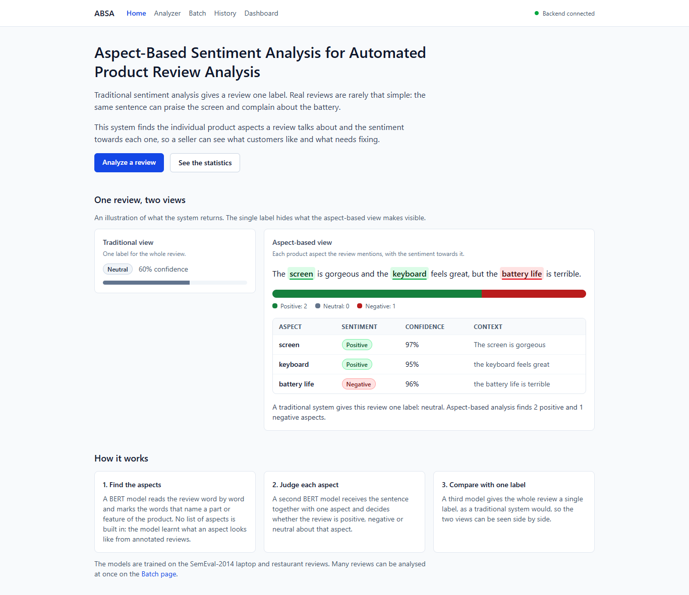
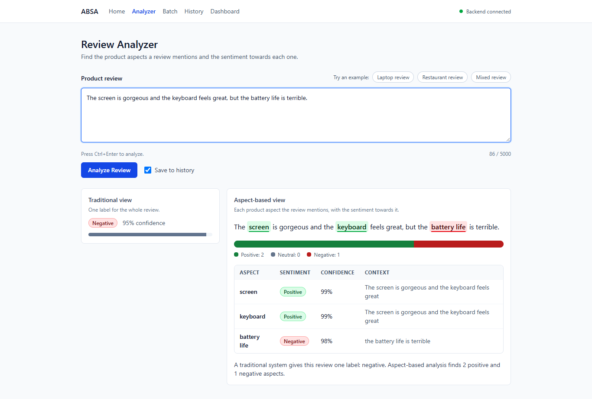
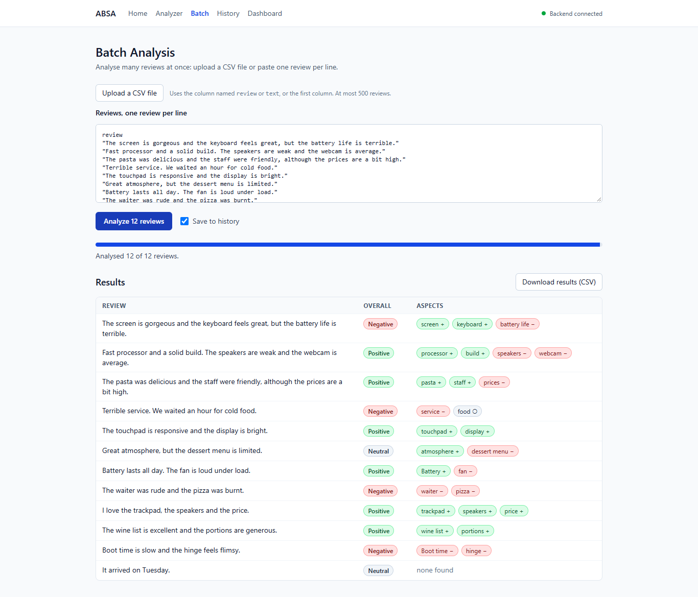
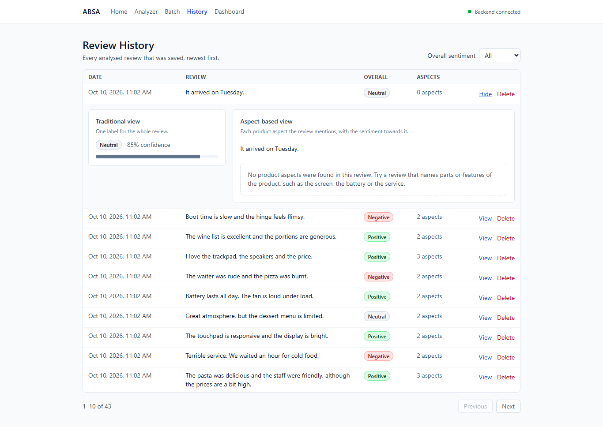
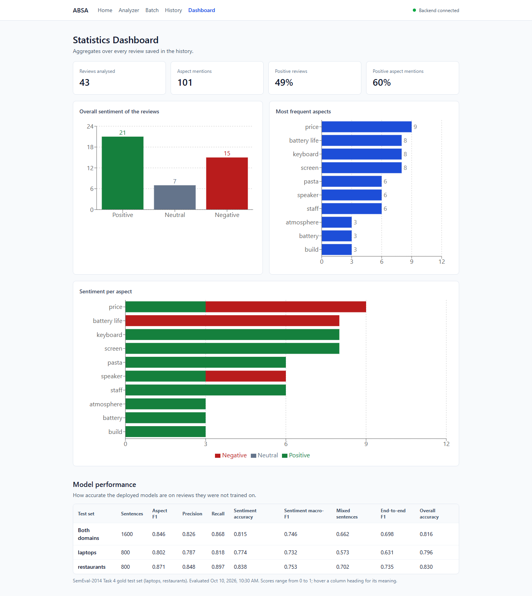
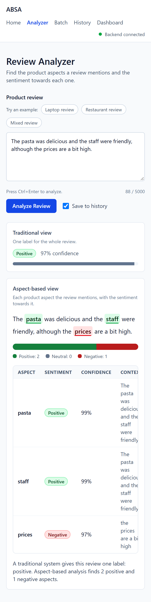
12Testing
TABLE XV checks the behaviour of the complete application: each case was sent as an HTTP request to the real service with the deployed models and a temporary database on 2 November 2026, on the laptop described in Section 9. "Expected output" is what a careful human reader would answer; a case fails when the application's answer differs, even if it does not crash. Times include the HTTP round trip inside the test client.
| Test ID | Input / Scenario | Expected output | Actual output | Pass / Fail |
|---|---|---|---|---|
| T1 | Normal laptop review: "The screen is gorgeous but the battery life is terrible." | screen positive, battery life negative | screen positive (0.99), battery life negative (0.98); overall negative; 4.70 s (first request after start-up) | Pass |
| T2 | Normal restaurant review: "The pasta was delicious but the service was slow." | pasta positive, service negative | pasta positive (1.00), service negative (0.98); overall neutral (0.53); 0.23 s | Pass |
| T3 | Empty input "" | Rejected with a validation message, no server error | HTTP 422 "String should have at least 1 character" | Pass |
| T4 | Whitespace only " " | Rejected as blank | HTTP 422 "review must not be blank" | Pass |
| T5 | Very long input: 4,679 characters (90 sentences) | All aspects found, within the time limit | 180 aspects, all positive; HTTP 200 in 8.50 s | Pass (slow) |
| T6 | Input of 5,001 characters | Rejected as too long | HTTP 422 "String should have at most 5000 characters" | Pass |
| T7 | HTML, entities and emojis: "<b>The keyboard</b> is AMAZING!!! 😍😍 but the trackpad & speakers are meh 👎" | Markup removed; keyboard positive; trackpad and speakers negative | keyboard positive (1.00), trackpad negative (0.58), speakers neutral (0.56) | Partial |
| T8 | Typos: "The batery life is grate but the scren is to dim." | batery life positive, scren negative | batery life negative (0.69), scren negative (0.94); both misspelt aspects extracted | Partial |
| T9 | Code-mixed Hindi-English: "Camera bahut accha hai but battery jaldi khatam ho jati hai." | Camera positive, battery negative | Camera neutral (0.48), battery negative (0.43) | Partial |
| T10 | Other language (French): "La batterie est excellente mais l'écran est trop sombre." | batterie positive, écran negative | No aspects found; overall positive (0.97) | Fail (out of scope) |
| T11 | No aspect: "I love it!" | No aspects; overall positive | No aspects; overall positive (0.99); 0.12 s | Pass |
| T12 | Negation: "The food was not good at all." | food negative | food negative (0.98) | Pass |
| T13 | Three sentences: "The camera takes sharp photos. However, the phone overheats when gaming. Delivery was quick." | camera positive, phone negative, Delivery positive | camera positive (0.99), gaming negative (0.86), Delivery positive (1.00); 0.57 s | Partial |
| T14 | Unseen domain (hotel): "The room was spotless but the breakfast was cold and the staff were rude." | room positive, breakfast negative, staff negative | room negative (0.96), breakfast negative (0.96), staff negative (0.98) | Fail |
| T15 | Batch of 3 reviews | 3 results, each stored | HTTP 200, 3 results with ids; 0.58 s | Pass |
| T16 | Batch of 51 reviews | Rejected: limit is 50 | HTTP 422 "List should have at most 50 items" | Pass |
| T17 | History and statistics after T1 to T15 | All stored reviews listed and counted | 14 reviews, 201 aspects; distributions and top aspects returned | Pass |
| T18 | Delete a stored review, then read it | 204, then 404 | HTTP 204, then HTTP 404 | Pass |
| T19 | Read a review id that does not exist | 404 Not Found | HTTP 404 | Pass |
| T20 | Health and model information | Models loaded, database reachable; test metrics returned | status "ok", models_loaded true, database true; model-info HTTP 200 | Pass |
Summary. 13 of 20 cases pass, one passes but is slow, four are partly right and two fail. The application itself never crashed: every invalid input was rejected with a clear 422 message (R6) and every valid one returned a well-formed result. The partial and failed cases are model errors that match Section 10.5 (weak neutral handling, rare words such as "spotless", the noun "gaming" picked instead of "phone") and the stated scope: the model was trained on English only, so French text yields no aspects and Hindi-English text yields low-confidence labels. Typical reviews took 0.12 to 0.57 s, meeting R8; the very first request after start-up took 4.7 s while the models warmed up, and the 4,679-character review took 8.5 s.
Automated tests. Separately from TABLE XV, the repository contains 149 fast backend tests (pytest, with small stand-in models) and 10 tests on the real models, plus 114 frontend component and page tests (Vitest). At the last full run on 20 October 2026 all 149 fast backend tests and all 114 frontend tests passed and the production build succeeded; the 10 real-model tests passed on 10 October 2026. The Batch page was also checked in a real browser at 1,366 and 390 pixels wide with keyboard, mouse and touch (R11).
13Deployment and user guide
Requirements. Python 3.10 or newer, Node.js 20 or newer, about 2 GB of free RAM for the three models, and about 1.3 GB of disk for the model files. The commands are for Windows PowerShell; on macOS or Linux activate the environment with source .venv/bin/activate. No hosted deployment exists; the application runs locally.
Step 0. Get the code
git clone https://github.com/loki1948/ABSA-Product-Review-Analysis.git cd ABSA-Product-Review-Analysis
Step 1. Backend environment
python -m venv .venv .venv\Scripts\Activate.ps1 pip install torch --index-url https://download.pytorch.org/whl/cpu pip install -r backend\requirements.txt
Step 2. Dataset
cd backend python -m training.prepare_dataset
Step 3. Models
The three model folders (about 420 MB each) are not stored in git. Copy models/aspect_extraction, models/sentiment and models/overall_sentiment from the shared archive (docs/model_sharing.md), or train them (several hours on a laptop CPU, minutes on a GPU or in Google Colab):
python -m training.run_all --smoke # whole chain on 32 sentences, a few minutes python -m training.run_all # train the three models on both domains python -m training.promote --apply # install the candidates that qualify python -m training.evaluate # regenerate docs/results.md
Step 4. Run the application (one command)
powershell -ExecutionPolicy Bypass -File scripts\start_app.ps1
The script frees ports 8000 and 5173, starts the backend, waits until /api/health reports the models loaded, starts the frontend and opens http://localhost:5173. Stop it with scripts\stop_app.ps1. The manual equivalent is uvicorn app.main:app in backend and npm install then npm run dev in frontend. Interactive API documentation is served at http://localhost:8000/docs.
Step 5. Use it
- Open the Analyzer, paste a review and press Analyze (or Ctrl+Enter). Aspects are highlighted and listed with sentiment and confidence.
- Open Batch, paste one review per line or upload a CSV with a
reviewcolumn (for exampledata/samples/demo_reviews.csv), run it, and export the results as CSV. - Open History to search, reopen or delete earlier analyses, and Dashboard for the aggregate charts and the models' test metrics.
Tests
cd backend; pytest -m "not model" # fast backend tests cd frontend; npm test; npm run build # frontend tests and production build
Configuration uses environment variables with the prefix ABSA_ (see backend/.env.example); no secrets are needed. A docker-compose.yml is included but has not been run, because Docker was not available on the development machine.
14Limitations and ethical considerations
Where the model fails or was not tested. The models were trained on English laptop and restaurant reviews from 2014. Other product categories work only as far as the models generalise (Section 10.4 and test T14), and other languages, dialects, transliterated or code-mixed text were not part of training (T9, T10). Only explicit aspects are found: "It dies after two hours" implies the battery but names no aspect. The sentiment classifier identifies an aspect by its text, so if the same term occurs twice in one sentence with different sentiments both occurrences get one prediction. Neutral aspects and sentences that mix sentiments remain the weakest cases. Overall-sentiment labels were derived from aspect labels rather than annotated. Every number comes from one run with one seed, without confidence intervals, and confidence values are uncalibrated softmax probabilities.
Bias. The training reviews come from one benchmark collected from English-language sources in 2014; the vocabulary, products and writing styles of that sample shape what counts as an aspect and how opinions are read. Reviews written in other varieties of English, by non-native writers or with heavy slang may be analysed less accurately. Positive aspects dominate the data (52 to 64%), and the error analysis shows a bias towards assigning a sentence's tone to neutral mentions. Results should support, not replace, a human reading of the reviews, especially when they influence decisions about products or people.
Privacy. The system runs locally and sends no text to any external service. Analysed reviews are stored in a local SQLite file only when saving is enabled, and each stored review can be deleted from the History page. Reviews can contain names or personal details; users should not upload such text without the authors' consent, and a production deployment would need access control, retention rules and encryption at rest, none of which this academic prototype provides.
Dataset licence. SemEval-2014 Task 4 data is used for non-commercial academic research, as its organisers intended, and is cited [3]. The data files are not redistributed in the repository; the preparation script downloads them. The Hu and Liu opinion lexicon used by the baseline is likewise cited [5]. The pretrained BERT weights are used under their Apache 2.0 licence.
Use of AI tools. An AI coding assistant (Claude, by Anthropic) was used during the project to help write and review code, tests and documentation, to run the evaluation scripts, and to draft this report from the project's own measured outputs. All numbers in the report were produced by the project's scripts and test runs, and the literature was checked against the publishers' pages. Team: confirm or adjust this statement to match your course's AI-use policy.
15Conclusion and future work
This project built a complete aspect-based sentiment analysis system for product reviews: a validated, leakage-free data pipeline for SemEval-2014 Task 4, two fine-tuned BERT models that extract aspect terms and classify the sentiment towards each, a sentence-level model for comparison, and a web application that serves them on a CPU-only laptop. On the official test sets the system reached an aspect-extraction F1 of 0.846, an aspect-sentiment accuracy of 0.815 with a macro-F1 of 0.746, and an end-to-end F1 of 0.698, against 0.253 for a rule-and-lexicon baseline. On sentences that mix sentiments it was correct for 66% of aspects where an aspect-agnostic model managed 49%, which shows the value of reading each aspect separately.
Three next steps follow from the error analysis. First, collect or select more training sentences with contrasting aspects and neutral mentions, the two weakest cases. Second, mark the aspect's position inside the sentence in the classifier input, so that repeated terms and neighbouring opinions are told apart. Third, annotate a few hundred reviews from each new product category the application is meant to serve, and repeat training with several seeds to report variance.
16References
- [1]Spiegel Research Center, "How online reviews influence sales: Evidence of the power of online reviews to shape customer behavior," Medill School of Journalism, Northwestern Univ., Evanston, IL, USA, 2017. [Online]. Available: https://spiegel.medill.northwestern.edu/how-online-reviews-influence-sales/
- [2]BrightLocal, "Local consumer review survey 2025," Jan. 2025. [Online]. Available: https://www.brightlocal.com/research/local-consumer-review-survey-2025/
- [3]M. Pontiki, D. Galanis, J. Pavlopoulos, H. Papageorgiou, I. Androutsopoulos, and S. Manandhar, "SemEval-2014 Task 4: Aspect based sentiment analysis," in Proc. 8th Int. Workshop Semantic Evaluation (SemEval 2014), Dublin, Ireland, 2014, pp. 27–35, doi: 10.3115/v1/S14-2004.
- [4]W. Zhang, X. Li, Y. Deng, L. Bing, and W. Lam, "A survey on aspect-based sentiment analysis: Tasks, methods, and challenges," IEEE Trans. Knowl. Data Eng., vol. 35, no. 11, pp. 11019–11038, Nov. 2023, doi: 10.1109/TKDE.2022.3230975.
- [5]M. Hu and B. Liu, "Mining and summarizing customer reviews," in Proc. 10th ACM SIGKDD Int. Conf. Knowl. Discovery Data Mining (KDD ’04), Seattle, WA, USA, 2004, pp. 168–177, doi: 10.1145/1014052.1014073.
- [6]G. Brauwers and F. Frasincar, "A survey on aspect-based sentiment classification," ACM Comput. Surv., vol. 55, no. 4, Art. no. 65, 2022, doi: 10.1145/3503044.
- [7]A. Nazir, Y. Rao, L. Wu, and L. Sun, "Issues and challenges of aspect-based sentiment analysis: A comprehensive survey," IEEE Trans. Affect. Comput., vol. 13, no. 2, pp. 845–863, 2022, doi: 10.1109/TAFFC.2020.2970399.
- [8]R. Li, H. Chen, F. Feng, Z. Ma, X. Wang, and E. Hovy, "Dual graph convolutional networks for aspect-based sentiment analysis," in Proc. 59th Annu. Meeting Assoc. Comput. Linguistics (ACL-IJCNLP), 2021, pp. 6319–6329, doi: 10.18653/v1/2021.acl-long.494.
- [9]Y. Tian, G. Chen, and Y. Song, "Aspect-based sentiment analysis with type-aware graph convolutional networks and layer ensemble," in Proc. Conf. North Amer. Chapter Assoc. Comput. Linguistics (NAACL-HLT), 2021, pp. 2910–2922, doi: 10.18653/v1/2021.naacl-main.231.
- [10]C. Sun, L. Huang, and X. Qiu, "Utilizing BERT for aspect-based sentiment analysis via constructing auxiliary sentence," in Proc. Conf. North Amer. Chapter Assoc. Comput. Linguistics (NAACL-HLT), Minneapolis, MN, USA, 2019, pp. 380–385, doi: 10.18653/v1/N19-1035.
- [11]H. Xu, B. Liu, L. Shu, and P. Yu, "BERT post-training for review reading comprehension and aspect-based sentiment analysis," in Proc. Conf. North Amer. Chapter Assoc. Comput. Linguistics (NAACL-HLT), Minneapolis, MN, USA, 2019, pp. 2324–2335, doi: 10.18653/v1/N19-1242.
- [12]J. Dai, H. Yan, T. Sun, P. Liu, and X. Qiu, "Does syntax matter? A strong baseline for aspect-based sentiment analysis with RoBERTa," in Proc. Conf. North Amer. Chapter Assoc. Comput. Linguistics (NAACL-HLT), 2021, pp. 1816–1829, doi: 10.18653/v1/2021.naacl-main.146.
- [13]R. Seoh, I. Birle, M. Tak, H.-S. Chang, B. Pinette, and A. Hough, "Open aspect target sentiment classification with natural language prompts," in Proc. Conf. Empirical Methods Natural Lang. Process. (EMNLP), 2021, pp. 6311–6322, doi: 10.18653/v1/2021.emnlp-main.509.
- [14]H. Yan, J. Dai, T. Ji, X. Qiu, and Z. Zhang, "A unified generative framework for aspect-based sentiment analysis," in Proc. 59th Annu. Meeting Assoc. Comput. Linguistics (ACL-IJCNLP), 2021, pp. 2416–2429, doi: 10.18653/v1/2021.acl-long.188.
- [15]W. Zhang, X. Li, Y. Deng, L. Bing, and W. Lam, "Towards generative aspect-based sentiment analysis," in Proc. 59th Annu. Meeting Assoc. Comput. Linguistics (ACL-IJCNLP), Vol. 2: Short Papers, 2021, pp. 504–510, doi: 10.18653/v1/2021.acl-short.64.
- [16]Z. Gou, Q. Guo, and Y. Yang, "MvP: Multi-view prompting improves aspect sentiment tuple prediction," in Proc. 61st Annu. Meeting Assoc. Comput. Linguistics (ACL), Toronto, Canada, 2023, pp. 4380–4397, doi: 10.18653/v1/2023.acl-long.240.
- [17]K. Scaria, H. Gupta, S. Goyal, S. Sawant, S. Mishra, and C. Baral, "InstructABSA: Instruction learning for aspect based sentiment analysis," in Proc. Conf. North Amer. Chapter Assoc. Comput. Linguistics (NAACL-HLT), Vol. 2: Short Papers, Mexico City, Mexico, 2024, pp. 720–736, doi: 10.18653/v1/2024.naacl-short.63.
- [18]Z. Wang, Q. Xie, Y. Feng, Z. Ding, Z. Yang, and R. Xia, "Is ChatGPT a good sentiment analyzer? A preliminary study," 2023, arXiv:2304.04339.
- [19]W. Zhang, Y. Deng, B. Liu, S. J. Pan, and L. Bing, "Sentiment analysis in the era of large language models: A reality check," in Findings Assoc. Comput. Linguistics: NAACL 2024, Mexico City, Mexico, 2024, pp. 3881–3906, doi: 10.18653/v1/2024.findings-naacl.246.
- [20]J. Devlin, M.-W. Chang, K. Lee, and K. Toutanova, "BERT: Pre-training of deep bidirectional transformers for language understanding," in Proc. Conf. North Amer. Chapter Assoc. Comput. Linguistics (NAACL-HLT), Minneapolis, MN, USA, 2019, pp. 4171–4186, doi: 10.18653/v1/N19-1423.
- [21]I. Loshchilov and F. Hutter, "Decoupled weight decay regularization," in Proc. 7th Int. Conf. Learn. Represent. (ICLR), New Orleans, LA, USA, 2019.
- [22]T. Wolf et al., "Transformers: State-of-the-art natural language processing," in Proc. Conf. Empirical Methods Natural Lang. Process.: System Demonstrations (EMNLP), 2020, pp. 38–45, doi: 10.18653/v1/2020.emnlp-demos.6.
17Project artefacts and member contribution
| Item | Link / Details |
|---|---|
| Code repository (GitHub) | https://github.com/loki1948/ABSA-Product-Review-Analysis (public; branch main) |
| Demo video | Video link A talk script for recording it is in docs/demo_talk.md. |
| Deployed app (if any) | Not deployed; runs locally (Section 13). |
| Plagiarism report (% similarity) | Similarity % from the institution's checker |
| Trained models | Three BERT model folders, about 420 MB each, shared as absa-models.zip (docs/model_sharing.md). |
| Name | Register Number | Work done |
|---|---|---|
| Name | Register no. | e.g. data pipeline, model training and evaluation |
| Name | Register no. | e.g. backend API and database |
| Name | Register no. | e.g. frontend, testing, report |
✓Final submission checklist
- ☐Cover page complete: course, names, register numbers and supervisor still to be filled.
- ☑All sections filled; template guidance removed.
- ☑Literature review with at least 8 papers (2021 to 2026) and the comparison table.
- ☑Requirements, design and module tables filled (Sections 4 and 7).
- ☑Results compared with baselines (classical and transformer) using accuracy, macro-F1 and span F1.
- ☑Error analysis with 40 real misclassified examples grouped by cause.
- ☑UI screenshots captioned.
- ☑20 application test cases with actual results.
- ☐Run instructions tested on a fresh machine or Colab: not yet done.
- ☑Figures captioned "Fig. 1." and tables "TABLE I".
- ☑At least 10 references in IEEE style.
- ☐Plagiarism report attached.
- ☑Code repository link (GitHub).
- ☐Demo video link.